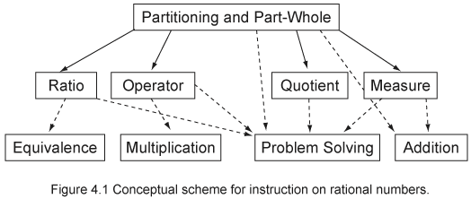
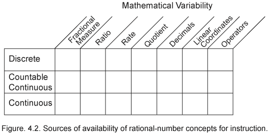
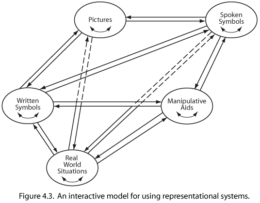
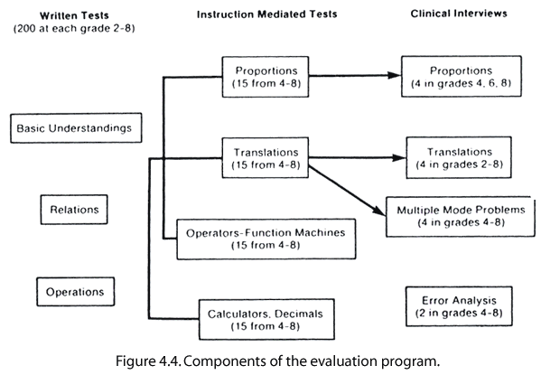
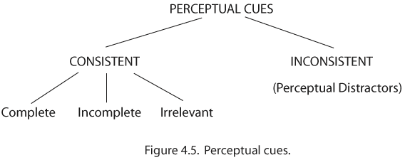
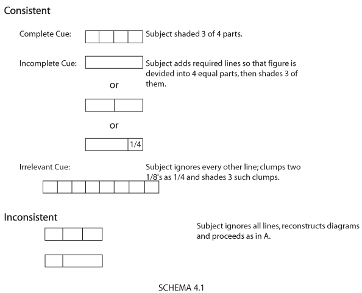
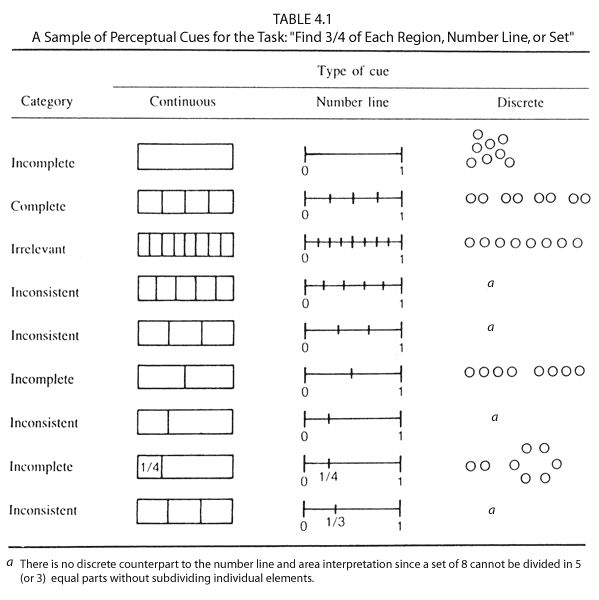
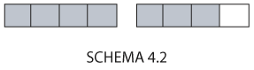

| Rational Number Project Home Page |
|
|
| Behr, M., Lesh, R., Post, T., & Silver E. (1983). Rational Number Concepts. In R. Lesh & M. Landau (Eds.), Acquisition of Mathematics Concepts and Processes, (pp. 91-125). New York: Academic Press. |
|
|
CHAPTER 4
Rational-Number Concepts*
Merlyn
J. Behr, Richard Lesh, Thomas R. Post,
and Edward A. Silver
Rational-number concepts are among the most complex and important mathematical ideas children encounter during their presecondary school years. Their importance may be seen from a variety of perspectives: (a) from a practical perspective, the ability to deal effectively with these concepts vastly improves one's ability to understand and handle situations and problems in the real world; (b) from a psychological perspective, rational numbers provide a rich arena within which children can develop and expand the mental structures necessary for continued intellectual development; and (c) from a mathematical perspective, rational-number understandings provide the foundation upon which elementary algebraic operations can later be based.
NAEP (National Assessment of Education Progress) results (Carpenter, Coburn, Reys, & Wilson, 1976; Carpenter, Corbitt, Kepner, Lindquist, & Reys, 1980) have shown that children experience significant difficulty learning and applying rational-number concepts. For example, results of both assessments indicate that most 13- and 17-year olds could successfully add fractions with like denominators, but only one-third of the 13-year olds and two-thirds of the 17- year olds could correctly add 1/2 + 1/3. NAEP findings are consistent with those of other studies (Coburn, Beardsley, & Payne, 1975; Lankford, 1972; SMSG [School Mathematics Study Group] 1968), indicating generally low performance on rational-number computation and problem solving. The low level of performance may seem quite surprising in light of the fact that school programs tend to emphasize procedural skills and computational algorithms for rational numbers. However, the generally poor performance may be a direct result of this curricular emphasis on procedures rather than the careful development of important functional understandings.
Many of the "trouble spots" in elementary school mathematics are related to rational-number ideas. Moreover, the development of rational-number ideas is viewed as an ideal context in which to investigate general mathematical concept acquisition processes because:
- Much of the development
occurs on the threshold of a significant period of cognitive reorganization
(that is, the transition from concrete to formal operational thinking);
- interesting qualitative
transitions occur not only in the structure of the underlying concepts
but also in the representational systems used to describe and model
these structures;
- the roles of representational
systems are quite differentiated and interact in psychologically interesting
ways because both figurative and operational task characteristics are
critical;
- the rational-number concept involves a rich set of integrated subconstructs and processes, related to a wide range of elementary but deep concepts (e.g., measurement, probability, coordinate systems, graphing, etc.).**
Piaget focused on the operational aspects of tasks and concepts, using the term horizontal decalage to refer to the fact that, whereas it may be useful to think of a person as being characterized by a given cognitive structure, he will not necessarily be able to perform within that structure for all tasks. It is common to encounter horizontal decalage with respect to rational number concepts, in that models embodying the same concept vary radically, often by several years, in the ease with which they are understood by children. Therefore, information about how task variables, such as figurative content, influence task difficulty is important for those who must select or devise appropriate models to illustrate rational- number concepts.
A
Mathematical and Curricular Analysis of
Rational-Number Concepts
Analyses of the components of the concept of rational number (Kieren, 1976; Novillis, 1976; Rappaport, 1962; Riess, 1964; Usiskin. 1979) suggest one obvious reason why complete comprehension of rational numbers is a formidable learning task. Rational numbers can be interpreted in at least these six ways (referred to as subconstructs): a part-to-whole comparison, a decimal, a ratio, an indicated division (quotient), an operator, and a measure of continuous or discrete quantities. Kieren (1976) contends that a complete understanding of rational numbers requires not only an understanding of each of these separate subconstructs but also of how they interrelate. Theoretical analyses and recent empirical evidence suggest that different cognitive structures may be necessary for dealing with the various rational number subconstructs.
A number of studies have identified stages in children's rational-number thinking by examining the gradual differentiation and progressive integration of separate subconstructs. One important aspect of these studies has been to observe whether or not subjects performing at a given stage on tasks involving one subconstruct perform at a comparable level on tasks involving a different subconstruct. Relationships between specific skills and certain basic rational number understandings have also been investigated.
Kieren (1981) has identified and discussed five faces of mathematical knowledge building. They relate to the mathematical, visual, developmental, constructive, and symbolic nature of mathematics, learning mechanisms, and learners. Four mathematical subconstructs of rational numbers--measure, quotient, ratio, and operator--each provide quantitative and relational rational-number experience. Equivalence and partitioning are constructive mechanisms operating across the four subconstructs to extend images and build mathematical ideas.
The Part-Whole and Measure Subconstructs
The part-whole interpretation of rational number depends directly on the ability to partition either a continuous quantity or a set of discrete objects into equal-sized subparts or sets. This subconstruct is fundamental to all later interpretations and is considered by Kieren (1981) to be an important language- generating construct.
The part-whole interpretation is usually introduced very early in the school curriculum. Children in first and second grade have primitive understandings of the meaning of one-half and the basic partitioning process (Polkinghorne, 1935). It is not until fourth grade, however, that the fraction concept is treated in a systematic fashion. Students normally explore and extend rational-number ideas through the eighth grade, after which these understandings are applied in elementary algebra. Many student difficulties in algebra can be traced back to an incomplete understanding of earlier fraction ideas.
Geometric regions, sets of discrete objects, and the number line are the models most commonly used to represent fractions in the elementary and junior high school. Interpretation of geometric regions apparently involves an understanding of the notion of area. Owens (1980) and Sambo (1980) each examine the relationship between a child's concept of area and her or his ability to learn fraction concepts. Owens finds a positive relationship between success on area tasks and success in an instructional unit based on geometric regions. Sambo reports that deliberate teaching for transfer from area tasks aids children's ability to learn fraction concepts when geometric regions and measurement interpretations are involved.
Ellerbruch and Payne (1978) claim that research as well as classroom practice suggest the introduction of fraction concepts using a single model, and they recommend the part-whole measurement model as the most natural for young children and the most useful for addition of like fractions. The Initial Fraction Sequence (IFS), an instructional sequence based on the research of Payne and his colleagues (Ellerbruch & Payne, 1978), emphasizes the importance of developing a firm foundation of fraction concepts before introducing children to operations or relations on rational numbers. IFS uses rectangular regions because of the ease of making models from strips of paper, and proceeds carefully from concrete or pictorial models to oral fraction names, to natural language written names (e.g., three-fourths), and finally to formal mathematical symbols.
The number-line model adds an attribute not present in region or set models, particularly when a number line of more than one unit long is used. Novillis-Larson (1980) presented seventh-grade children with tasks involving the location of fractions on number lines that were one or two units long and for which the number of segments in each unit segment equaled or was twice the denominator of the fraction. Results of the study indicated that, among seventh-graders, associating proper fractions with points was significantly easier on number lines of length one and when the number of segments equaled the denominator. Novillis-Larson's findings suggest an apparent difficulty in perception of the unit of reference: when a number line of length two units was involved, almost 25% of the sample used the whole line as the unit. Her data also indicate that children do not associate the rational number one-third with a point for which partitioning suggests two-sixths. Such results suggest an imprecise and inflexible notion of fraction among seventh graders.
Whether or not the type of embodiment (continuous quantity versus discrete quantity) demands different types of cognitive structures was investigated by Hiebert and Tonnessen (1978), who asked whether the part-whole interpretation given by Piaget, Inhelder, and Szeminska (1960) was appropriate for both the discrete and the continuous cases of length and area. Their tasks required children to divide a quantity equally and completely among a number of stuffed animals. They found that children performed considerably better on tasks involving the discrete case (set-subset) than the continuous case. One possible explanation is that solutions of the continuous quantity tasks (Piaget et al., 1960) require a well-developed anticipatory scheme, whereas discrete quantity tasks can be solved simply by partitioning. In particular, the discrete tasks can be solved without treating the set as a whole and without anticipating the final solution. Because the strategies employed by children for discrete quantity tasks are so markedly different from those employed for continuous quantity tasks, it is reasonable to assume that cognitive structures involved in solving rational-number problems referring to a discrete model are different from those involved in solving rational-number problems referring to a continuous model.
Rational Number as Ratio
Ratio is a relation that conveys the notion of relative magnitude; therefore, it is more correctly considered as a comparative index rather than as a number. When two ratios are equal they are said to be in proportion to one another. A proportion is simply a statement equating two ratios. The use of proportions is a very powerful problem-solving tool in a variety of physical situations and problem settings that require comparisons of magnitudes.
Noelting (1978, pp. 242-277) used an orange-juice test to investigate subjects' ability to compare ratios. Noelting's tasks asked children to specify which of two mixtures of orange juice and water would taste more "orangy." Three stages were observed among subject-' responses, ranging from making judgments based only on comparisons of terms, to comparing ordered pairs using multiplicative rules, to the final stage in which ordered pairs were seen as belonging to a class.
The use of glasses of water and orange juice suggests a discrete model. Another line of inquiry, using continuous quantities, is represented by Karplus, Karplus, Formisano, and Paulsen (1979, pp. 47-103), Karplus, Karplus, and Wollman (1974), and Kurtz and Karplus (1979). Subjects were asked to find an unknown component of a proportionality statement by equating two ratios involving length, distance, or volume. Like Noelting, Karplus and his colleagues have identified various levels of cognitive functioning, ranging from random guessing to additive (rather than multiplicative) reasoning, to the highest level at which the data are utilized at a formal level of multiplicative ratio thinking.
Rational
Numbers as Indicated Division and as
Elements of a Quotient Field
According to the part-whole interpretation of rational numbers, the symbol a/b usually refers to a fractional part of a single quantity. In the ratio interpretation of rational numbers, the symbol a/b refers to a relationship between two quantities. The symbol a/b may also be used to refer to an operation. That is, a/b is sometimes used as a way of writing a ÷ b. This is the indicated division (or indicated quotient) interpretation of rational numbers.
Consideration of rational numbers as quotients involves at least two levels of sophistication. On the one hand, 8/4 or 2/3 interpreted as an indicated division results in establishing the equivalence of 8/4 and 2, or 2/3 and .666. But rational numbers can also be considered as elements of a quotient field, and, as such, can be used to define equivalence, addition, multiplication, and other properties from a purely deductive perspective; all algorithms are derivable from equations via the field properties (Kieren, 1976). This level of sophistication generally requires intellectual structures not available to middle school children because it relates rational numbers to abstract algebraic systems.
Rational Number as Operator
The subconstruct of rational number as operator imposes on a rational number p/q an algebraic interpretation; p/q is thought of as a function that transforms geometric figures to similar geometric figures p/q times as big, or as a function that transforms a set into another set with p/q times as many elements. When operating on continuous object (length), we think of p/q as a stretcher-shrinker combination. Any line segment of length L operated on by p/q is stretched to p times its length and then shrunk by a factor of q. A multiplier-divider interpretation is given to p/q when it operates on a discrete set. The rational number p/q transforms a set with n elements to a set with np elements and then this number is reduced to np/q.
This rational-number concept can be embodied in a function machine in which p/q is thought of as a "p for q" machine. Thus, 3/4 is thought of as a 3 for 4 machine: an input of length or cardinality 4 produces an output of length of cardinality 3.
The operator interpretation of rational number is particularly useful in studying equivalence of fractions and the operation of multiplication. The problem of finding fractions equivalent to a given fraction is that of finding function machines that accomplish the same input-output transformations. Multiplication of fractions involves composition of functions.
A number of studies conducted by Kieren and his colleagues (Ganson & Kieren, 1980: Kieren & Nelson, 1978; Kieren & Southwell, 1979) and Noelting (1978, 242-277) have investigated the stage development of the operator and ratio constructs and the relationship between them in children's thinking.
Analysis of children's descriptions of how a machine works indicated that students thought subtractively and not multiplicatively. This was particularly true for students under 12. A second important finding was the role one-half played in subjects' thinking; 91% of the subjects mastered the "one-half" tasks. Even students who knew that a machine was not a one-half machine would give a one- half response when confused. Apparently the students' higher rate of success on one-half tasks, and greater familiarity with the number itself, led to misapplications. This type of error was made by 47% of the subjects (Kieren & Nelson, 1978).
Kieren and Southwell (1979) examined differences between children's ability to perform operator tasks when the task was embedded in a function machine compared with a "simpler" approach consisting of patterns of symbolic input-output number pairs. An analysis of variance of correct responses indicated no significant differences due to representation mode. Three levels of rational-number operator development were observed in data from both types of tasks. The authors suggested that understanding of equivalence class and partitioning were the important mechanisms underlying this development. Partitioning refers to the division of a set into subsets. Applying equivalence class thinking to a one-third tusk, a subject who correctly pairs 2 with 6 explains, "divided by 3. " A more sophisticated use of the mechanism is required for success on the nonunit fraction task of "two-thirds;" to pair 90 with 60, a student thinks, "divide by 3 and take 2 of them." The general fractional operator appears to require the coordination of the partitioning of two subsets of numbers with a multiplicative operation, in this case doubling. This covaried partitioning strategy was used most often by subjects in the machine representation condition. In the pattern representation condition, a pattern explanation frequently accompanied a correct response. Thus, in pairing 24 with 16 in the two-thirds task, the subject would say, "Well, I know 12 went to 8 so I just doubled to get 16." A higher level of performance was observed in the machine group at a younger age compared with the pattern group.
Ganson und Kieren (1980) gave a single group of subjects both operator tasks (Kieren & Nelson, 1978) und orange juice tasks (Noelting, 1978). They concluded that (a) there is an indication that students who are able to partition are also able to perform comparisons and to recognize equivalences, and (b) the level of cognitive thinking necessary for successful performance on general operator tasks is relatively the same level as that needed for successful performance on the multiplicative-equivalence comparisons in the ratio tasks.
Summary
Because of an emphasis on the part-whole subconstruct in school mathematics curricula and the concomitant rapid progression to symbolic computation procedures, a disproportionate amount of pure research on rational numbers was concerned with questions relating to which of several algorithmic procedures would best facilitate children's computation performance. More recently, research has included data-based observations concerned not with simple comparisons between two instructional procedures but with attempts to identify and describe the mental processes employed by children engaged in these tasks.
The large majority of current efforts are status studies. That is, the researcher gathers data relating to children's knowledge of a particular area without regard for concurrent instruction or consideration of the quality or extent of the child's past instructional experiences. Because much of what children know about the more formal aspects of mathematics is influenced by instruction, these status studies, although very useful, are inherently limited in the extent to which children's cognitive structures can be linked directly to instruction and/or specific experiences. Furthermore, they do not provide any insights into how concepts develop over time under the influence of a well-defined instructional sequence. Such information is undoubtedly crucial if research is to provide guidance for the redefinition of school curricula to promote the more effective learning of mathematics by all children.
One effort presently underway is attempting to investigate the development of cognitive structures for rational-number thinking within a well-defined, theoretically-based instructional program. It is discussed in the next section.
The Rational-Number Project
The NSF-supported (National Science Foundation) Rational Number Project consists of three interacting components: (a) an instructional component in which 18 fourth and fifth graders were observed, interviewed, and tested frequently during 16 weeks of theory-based instruction, (b) an evaluation component in which more than 1600 second through eighth grade children were tested using a battery of written tests, instruction mediated tests, and clinical interviews, and (c) a diagnostic-remedial component in which young adults who were experiencing difficulties with fractions were identified; their misunderstandings were isolated and remediated using materials borrowed from the evaluation component and activities borrowed from the instructional component.
General goals of the Rational Number Project are (a) to describe the development of the progressively complex systems of relations and operations that children in Grades 2-8 use to make judgments involving rational numbers, and (b) to describe the role that various representational systems (e.g., pictures, manipulative materials, spoken language, written symbols) play in the acquisition and use of rational-number concepts. The project aims to develop a psychological "map" describing (a) how various rational-number subconstructs (e.g., fractions, ratios, indicated quotients) gradually become differentiated and integrated to form a more mature understanding of rational numbers, (b) how various representational systems interact during the gradual development of rational number ideas, and (c) how a variety of theory-based interventions can further this development.
The project is concerned not only with what children can do "naturally," but also with what they can do accompanied by minimal guidance or following theory-based instruction. The interest is in exploring the "zone of proximal development" of children's rational-number concepts (Vygotsky, 1976), not only to describe the schemas children typically use to process rational-number information and to interpret rational-number situations, but also to describe how these schemas change as a result of theory-based instruction. Rather than seeking only to accelerate rational number understandings along narrow conceptual paths, the project is interested in studying the results of broadening and strengthening deficient conceptual models (see Lesh, Landau, & Hamilton, Chapter 9, this volume).
Theoretical Foundations
Theoretical foundations for the project were derived from four separate but mutually supportive theoretical bases: (a) Kieren's (1976) mathematical analysis of rational number into subconstructs; (b) Post and Reys's (1979) interpretation of Dienes's perceptual and mathematical variability principles; (c) Lesh's (1979) analysis of modes of representation related to mathematical concept acquisition and use; (d) an analysis of memory structures developed by a learner (Behr, Lesh, & Post, Note 1). These theoretical bases are discussed in turn below.
THE ANALYSIS OF RATIONAL-NUMBER SUBCONSTRUCTS
Our work has resulted in a redefinition of some of Kieren's (1976) categories and a subdivision of others. The scheme includes the following seven subconstructs.
The fractional measure subconstruct of rational number represents a reconceptualization of the part-whole notion of fraction. It addresses the question of how much there is of a quantity relative to a specified unit of that quantity.
The ratio subconstruct of rational number expresses a relationship between two quantities, for example, a relationship between the number of boys and girls in a room.
The rate subconstruct of rational number defines a new quantity as a relationship between two other quantities. For example, speed is defined as a relationship between distance and time. We observe here that although one adds rates in such a context as computing average speed, one seldom adds ratios.
The quotient subconstruct of rational number interprets a rational number as an indicated quotient. That is, a/b is interpreted as a divided by b. In a curricular context this subconstruct is exemplified by the following problem situation:
There are 4 cookies and 3 children. If the cookies are shared equally by the three children, how much cookie does each child get?
The linear coordinate subconstruct of rational number is similar to Kieren's notion of a measure interpretation. It emphasizes properties associated with the metric topology of the rational number line such as betweenness, density, distance, and (non)completeness. Rational numbers are interpreted as points on a number line, emphasizing that the rational numbers are a subset of the real numbers.
The decimal subconstruct of rational number emphasizes properties associated with the base-ten numeration system.
The operator subconstruct of rational number imposes on rational number a function concept; a rational number is a transformation. The stretcher-shrinker notions developed by UICSM (University of Illinois Committee on School Mathematics) CSMP (Comprehensive School Mathematics Project), and Dienes (1967) represent physical embodiments of this construct.
Questions regarding which of these subconstructs might best serve to develop in children the basic fraction concept, relations on rational numbers, operations with rational numbers, and applications of rational numbers remain unanswered. It seems plausible that the part-whole subconstruct, based both on continuous and discrete quantities, represents a fundamental construct for rational-number concept development. It is, in addition, a point of departure for instruction involving other subconstructs. The preliminary conceptualization of the interrelationships among the various subconstructs is depicted in Figure 4.1. The solid and dashed arrows suggest established and hypothesized relationships, respectively, among rational-number constructs, relations, and operations. The diagram suggests that (a) partitioning and the part-whole subconstruct of rational numbers are basic to learning other subconstructs of rational number; (b) the ratio subconstruct is most "natural" to promote the concept of equivalence; (c) the operator and measure subconstructs are very useful in developing an understanding of multiplication and addition.

THE ANALYSIS OF CONCRETE MODELS RELATED TO RATIONAL-NUMBER CONCEPTS
Post and Reys (1979) interpret the mathematical and perceptual variability principles of Dienes (1967) by using a matrix framework. Kieren's (1976) rational-number subconstructs constitute the mathematical variability dimension of the matrix. The perceptual variability dimension includes discrete objects, length models, area models, and written symbolic models.
The Rational Number Project has refined Post and Reys's matrix to include the categories shown in Figure 4.2.

Each cell in this matrix implies both a type of physical or symbolic activity and a mathematical perspective. Discrete materials used in the project included counters, egg cartons, and other sets of objects. Continuous materials involved some quantity such as length or area, and included Cuisenaire rods, number lines, and sheets of paper. Countable-continuous materials involved a continuous quantity that had been partitioned into countable units of the same' 'size" but not necessarily the same shape. Examples of countable continuous materials included tiles and graph paper.
AN INTERACTIVE REPRESENTATIONAL SYSTEMS MODEL
Lesh (1979) reconceptualized Bruner's (1966) enactive mode, partitioned Bruner's iconic mode into manipulative materials and static figural models (i.e., pictures), and partitioned Bruner's symbolic mode into spoken language and written symbols. Furthermore, these systems of representation were interpreted as interactive rather than linear, and translations within and between modes were given as much emphasis as manipulation of single representational systems. Figure 4.3 shows the Rational Number Project's modified version of Lesh's model.
A major focus of the project is the role of manipulative materials in facilitating the acquisition and use of rational-number concepts as the child's understanding moves from concrete to abstract. Psychological analyses show that manipulatives are just one component in the development of representational systems and that other modes of representation also play a role in the acquisition and use of concepts (Lesh, Landau, & Hamilton, 1980). A major hypothesis of the project is that it is the ability to make translations among and within these several modes of representation that makes ideas meaningful to learners.
The Rational Number Project has shifted away from attempting to identify the "best" manipulative aid for illustrating (all) rational-number concepts toward the realization that different materials are useful for modeling different real-world situations or different rational-number subconstructs (i.e., part-whole fractions, ratios, operators, proportions), and different materials may be useful at different points in the development of rational-number concepts. For example, paper folding may be excellent for representing part-whole relationships or equivalent fractions, but may be misleading for representing addition of fractions. There is no single manipulative aid that is "best" for all children and for all rational-number situations. A concrete model that is meaningful for one child in one situation may not be meaningful to another child in the same situation nor to the same child in a different situation. The goal is to identify manipulative activities using concrete materials whose structure fits the structure of the particular rational-number concept being taught.

Our current research is focusing heavily on analyzing the cognitive structure children use to perform various rational-number tasks. Task analyses reveal that even within the category of concrete materials, some are more concrete than others. One reasonable implication of this observation is that teachers attempting to concretize abstract rational-number concepts might be wise to begin instruction with those materials that are most concrete, least complex, and that draw upon useful intuitive understandings.
Because teachers can illustrate ideas such as "addition of fractions" using folded paper, Cuisenaire rods, or other manipulative materials, they may underestimate the level of sophistication that is required for performing these tasks. It is one thing for a child to know how to illustrate fractions such as 1/2 or 1/3 using Cuisenaire rods, and quite another to be able to illustrate 1/2 + 1/3 using the rods. Concrete materials that are useful for illustrating fractions may not be useful for illustrating addition of fractions. That is, the addition of fractions may be more meaningful if it is built on a strong concrete understanding of individual fractions, but this does not imply that learning to add Cuisenaire rods or folded paper will facilitate the child's understanding of addition of fractions.
Young learners do not work in a single representational mode throughout the solution of a problem. They may think about one part of the problem (say, the number) in a concrete way, but may think about another part of the problem using other representational systems (i.e., actions, spoken language rules, or written symbol procedures).
Figure 4.3 is intended to suggest that realistic mathematical problems are frequently solved by: (a) translating from the real situation to some system of representation, (b) transforming or operating with the representational system to produce some result or prediction, and (c) translating the result back into the real situation. Figure 4.3 is also intended to imply that many problems are solved using a sequence of partial mappings involving several representational systems. That is, pictures or concrete materials may be used as an intermediary between a real situation and written symbols, and spoken language may function as an intermediary between the real situation and the pictures, or the pictures and the written symbols.
Some problems inherently involve more than one mode at the start. For example, in real addition situations that involve fractions, the two items to be added may not always be two written symbols, two spoken symbols, or two pizzas; they may be one pizza and one written symbol, or one pizza and one spoken word. That is, the problem may involve showing the child half of a pizza and then asking how much the child would have if given another one-third of a pizza. In such problems, which occur regularly in real situations, part of the difficulty is to represent both addends using a single representational system.
Although a goal of the Rational Number Project has been to trace the development of rational-number ideas, our data have made us sensitive to the need to explain concept stability and instability-as well as concept development. For example, even though our study used criteria for "mastery" that were consider- ably more stringent than those typically used in school instruction, it was common to observe significant regression in concept understanding over 2- or 3-week periods. Not only must "mastered" concepts be remembered, they must be integrated into progressively more complex systems of ideas; sometimes they must be reconceptualized when they are extended to new domains. Ideas that are true in restricted domains (e.g., "multiplication is like repeated addition" or "a fraction is part of a whole") are misleading, incorrect, or not useful when they are extended to new domains. Mathematical ideas usually exist at more than one level of sophistication. They do not simply go from "not understood" to "mastered." Therefore, as they develop they must be reconceptualized periodically, and they must be embedded in progressively more complex systems that may significantly alter their original interpretation.
The Rational Number Project has been especially interested in interactions between internal and external representations of problem situations. Frequently, when children solve problems, an internal interpretation of the problem influences the selection, generation, or modification of an external representation. The external representation may involve a picture, concrete materials, or written symbols. Often the external representation models only part of the problem. For example, a child's first picture for an "addition of fractions" problem might represent the fractions without any attempt to represent the addition process. An external representation typically allows children to refine their internal representations and interpretations-which may cycle back to the generation (or selection) of a refined external representation, or to a solution. External representations can, among other things, reduce memory load or increase storage capacity, code information in a form that is more manipulable, or simplify complex relationships.
MEMORY STRUCTURES
Gagne and White (1978) proposed a model for relating memory structures to learning outcomes. They considered four memory structures: (a) networks of propositions (which store verbal knowledge); (b) intellectual skills (which underlie the identification of concepts and the application or rules); (c) images (primarily visual, but also auditory or haptic representations corresponding more or less directly with concrete objects or events); and, (d) episodes (incorporating representations of personal experience in the form of "first I did this, then I did that"). Tulving (1972) distinguished episodic memory from semantic memory (the storage of organized linguistic knowledge), emphasizing the autobiographical nature of episodic memory.
The consideration of memory structures is relevant to the use of manipulative aids in mathematics teaching. Episodic experience that a child gains from concrete aids may not provide retrievable knowledge without semantic information about the episodes and about relationships among different episodic experiences. Verbal interaction by the learner with a teacher or peers to observe the similarities and differences among episodic experiences and the materials on which they are based is probably essential.
Major Project Components
THE INSTRUCTIONAL COMPONENT
Materials Development
Twenty weeks of student instructional materials (over 600 pages) have been developed by project staff, piloted, and used in small-group teaching experiments with fourth- and fifth-grade children. Extensive observation guides and interview protocols have been produced to collect data about children's cognitive behavior on a lesson-by-lesson basis.
Each 20-week teaching experiment (one in DeKalb, two in Minneapolis) involved groups of six students and utilized audio- and videotaping, extensive interviewing, and pre- and postinstruction achievement testing. Control students were identified for each group for comparison purposes. The instructional materials reflect the project's underlying theoretical foundations. Part-whole, quotient, measure, and ratio interpretations of rational number, and translations within and among five representational modes are emphasized.
Data Collection and Analysis
Four major types of instruments have been used at the DeKalb and Minneapolis sites to identify and assess the development of children's rational- number concepts within the theory-based instruction.
- The Rational-Number Test was used as a pre- and postmeasure with both experimental and randomly selected nonexperimental students. This test, mainly concerned with content mastery, identified levels of student achievement in three areas: rational-number concepts, relations, and operations. This instrument was also used with classroom groups in Grades 2-8 across five geographic locations (N> 1600).
- Class Observation Guides were developed for each of the 12 lessons. Each lesson spanned 2-6 instructional days. These guides were designed to provide staff with information about the cognitive processes students may employ when dealing with situations involving rational-number concepts. Because the amount of information called for was extensive, the guides were often supplemented by audio or videotapes.
- Interview Protocols
involved audio or videotaped individual interviews, lasting from 15
to 50 minutes, and conducted with each student after each lesson. They
provide extensive information on the inferred mental processes, memory
structures, and understandings gained and utilized. These data will
provide detailed longitudinal information on the development of rational-number
concepts in individual students. Interview data were examined on a lesson-by-lesson
basis to assess the impact of specific instructional "moves"
on conceptual development.
The sequence of individual interviews that were conducted with the children over the 16-18-week teaching experiment were developed so that continuous information about the development of certain rational-number concepts would emerge. The interview protocols produced data in several separate but not mutually exclusive data strands that reflect children's ability to
- deal with visual
perceptual distracters,
- deal with questions
related to the equivalence and ordering of fractions,
- deal with the
basic fraction concept,
- understand
the concept of unit in rational-number situations,
- perform on tasks that require proportional reasoning,
- perform within and between mode translations and the relationship between this ability and performance on other rational number tasks, and
- accomplish problem-solving tasks involving rational numbers.
- Data from the first strand are reported in a subsequent section of the chapter. Coding System was designed to provide specific information on students' translations within and between modes of representation, the relative frequency of each type, and the identification of those that proved particularly troublesome.
THE EVALUATION COMPONENT
There are three components to the testing program: paper and pencil tests, instruction mediated tests, and clinical interviews (Figure 4.4) (Lesh & Hamilton, 1981).

The paper and pencil portion consists of three tests: Concepts, Relations, and Operations. The first assesses basic fraction and ratio concepts. The second assesses understanding of relationships between rational numbers, such as ordering, equivalent forms, and simple proportions. The third test assesses performance on addition and multiplication with fractions and various applications items. The tests are modularized to accommodate children in Grades 2-8. Several test items from previous studies were used intact or modified to make it possible to integrate results with past research (e.g., Carpenter, Coburn, Reys, & Wilson, 1978; Karplus, Pulos, & Stage, 1980; Kieren, 1976; Klahr & Siegler, 1978; Noelting, 1979) and to provide a basis for future research. A cross section of elementary and junior high school students were tested, producing baseline data on rational-number understandings for over 1600 children in Grades 2-8. Five geographic sites (Evanston, DeKalb, Minneapolis, San Diego, and Pittsburgh) were included in the data collection. The written tests were also used to identify students for follow-up interviews and for the diagnostic-remedial and error-analysis component of the project.
ERROR-ANALYSIS AND INTERVENTION COMPONENT
The point of view that led to the development of this component of the project was that a great deal could be learned from the careful study of rational-number knowledge possessed by young adults who had studied the topic for many years and had received typical school mathematics instruction. Two particular benefits to the Rational Number Project curriculum development efforts were planned: (a) by identifying the understandings and misunderstandings of these individuals, useful insights could be gained that might guide instructional development, and (b) the instructional routines developed in the other components of the project could be used in this component to test their remedial utility.
Work on this component of the project was completed at the San Diego site and consisted of three parts: written testing, clinical interviews, and instructional intervention. A total of 161 community college students (enrolled in a remedial arithmetic class) and 59 college students (enrolled in a mathematics course for preservice elementary school teachers) completed the three multiple-choice, written tests developed in the evaluation component.
From the testing sample, 20 subjects were chosen for clinical interviews. Subjects were interviewed individually in sessions lasting from 45 to about 75 minutes. The clinical interview reviewed selected problems from the written tests, especially those that the subject had missed, and the completion of additional tasks designed to probe the subject's rational-number understandings. Some interview tasks were borrowed from clinical interview protocols developed in the testing component of the project. The interviews were individually tailored to probe each subject's errors and understandings.
From the clinical interview sample, eight students were chosen for instructional intervention. Each student met with the investigator in individual sessions of about 45 minutes. The number of sessions ranged from one session for two of the subjects to eight sessions for one of the subjects. The focus of the intervention sessions was the remediation of errors and misconceptions identified in the clinical interviews and written tests. The instructional methodology employed was borrowed or adapted from instructional routines developed in the project.
Perceptual
Cues and the Quality of
Children's Thinking: A Project Study
Although it is frequently recommended that children should learn mathematical ideas using concrete manipulative aids, very little is known about how manipulative aids affect a child's mathematics learning or conceptual development. A number of research reviews (Fennema, 1972: Gerling & Wood, 1976: Kieren, 1969: Suydam & Higgins, 1977) provide evidence that the use of manipulatives does facilitate the learning of mathematical skills, concepts and principles. Existing research has dealt mainly with the superficial question of whether or not their use is effective, or which material is "best." The results have been equivocal. The literature contains little information about how manipulative aids affect children's cognitive functioning or why their use does or does not facilitate mathematical learning.
Data from three parallel 16-18-week teaching experiments recently conducted with fourth- and fifth-grade children by the Rational Number Project indicate considerable individual differences among children concerning (a) information they encode from a manipulative aid and (b) what features of an aid interfere with their logical-mathematical thinking. Concepts such as partitioning, equivalence, order, and unit recognition are basic thinking tools for understanding rational numbers. In our work it has been observed that certain components of a manipulative aid or pictorial display that are essential to illustrate one basic concept frequently impair the child's ability to use the aid for another concept. In particular, various types of perceptual cues can negatively influence children's thinking. In some cases, these perceptual cues act as distracters and overwhelm children's logical thought processes.
In the instructional component of the project, we found that children tend to assume that physical conditions within which problems are presented are relevant to and consistent with the task. This tendency is probably an artifact of their learning from a textbook- or worksheet-dominated instructional program that places little emphasis on manipulative materials. Within such a program, problem conditions are necessarily static in nature, providing little opportunity for children to manipulate problem conditions. Students expect that mathematical problem conditions (context) conform to the intended task and, therefore, are not in need of restructuring or rethinking. Children learn that one simply takes what is given, and proceeds directly to the solution.
Manipulative materials offer a mechanism for freeing children's thought processes because properly conceived and sequenced materials can provide for continual reconstruction of problem conditions and concurrently can permit a dynamic interaction between problem solver and problem conditions. Meaningful understanding of mathematical ideas and of the mathematical symbolism for these ideas depends in part on an ability to demonstrate interactively the association between the symbolic and manipulative-aid modes of representation. Theoretically, as children deal with mathematical ideas, embodied in manipulative aids, the mathematical ideas are abstracted into logical-mathematical structures. As children's logical-mathematical structures expand, it is presumed that their dependence upon the concrete manipulative aids decreases. Ultimately, logical-mathematical thought becomes sufficiently strong so that it dominates the visual-perceptual information.
By using a series of tasks in which visual-perceptual distracters were deliberately introduced, we obtained information that indicates differences among children in their ability to put aside, overcome, or ignore the distracters and deal with the tasks on a logical-mathematical level. The extent to which a child is able to do this-resolve conflicts between this perceptual processing of visual information and the child's cognitive processing of logical-mathematical relations-is viewed as one of several important indicators of the strength of the child's understanding of rational number concepts.
Definitions
By the term visual-perceptual cues, we mean the figures, models, or diagrams that accompany standard school tasks involving rational numbers. These cues are of two general types: those consistent with the task and those inconsistent with the task. Consistent cues may be further subdivided into three categories: complete, incomplete, and irrelevant. Inconsistent cues will be referred to as perceptual distracters. These relationships are depicted in Figure 4.5.

Consistent cues generally provide information to the student that can be used (perhaps with some modification) to aid in the solution of the task.
- Complete cues contain all necessary information to aid in the solution of task or problem. Furthermore the information is presented in a form that is useful for the task at hand.
- Incomplete cues require the student to add or modify existing features to complete the diagram or model.
- Irrelevant cues contain extraneous but neutral information. Such cues require the solver to ignore certain information.
Inconsistent cues are those that conflict with the conceptualization of the task or problem and, therefore, must be reconciled prior to solution. Inconsistent cues provide visual information that may be misleading or may distract the subject from the intended task. Inconsistent cues are referred to here as visual-perceptual distracters.
An example illustrates these distinctions. The task in all cases is to shade three-fourths of the rectangle.
Further clarification about types of perceptual cues and solution strategies is provided in Tables 4.1 and 4.2.


| TABLE
4.2 Solution Strategies for Various Types of Perceptual Cues |
|
| Type of visual cue | Recommended solution strategy |
|
|
|
| Consistent | |
|
No modification necessary. Find required fractional part using part-whole strategies. |
|
Identify appropriate unit fraction. Iterate unit fraction to complete diagram. Proceed as with consistent-complete cues. |
|
Highlight appropriate unit fraction. Ignore other partitions. Proceed as with consistent-complete cues. |
| Inconsistent (perceptual distractor) | Ignore all subdivisions. Reconstruct diagram so as to be complete. Proceed as with consistent-complete cues. |
|
|
|
| Table 4.3 | |||||||||||
| Percentage
of Student Errors by Type of Perceptual Cue. Interpretation of Fraction,
and Specific Example a
|
|||||||||||
| Baseline | Specific fraction | Number line | Discrete | Circles | Rectangles | ||||||
|
|
|||||||||||
| Consistent-complete | 3/4 |
61 | 18 | 0 | 1 | ||||||
| 2/3 | 68 | 22 | 5 | 0 | |||||||
| 5/3 | 75 | 90 | |||||||||
| 3/4 | 68 | 31 | 6 | 1 | |||||||
| Consistent-incomplete | 2/3 | 71 | 26 | 26 | 25 | ||||||
| 5/3 | 79 | 91 | |||||||||
| 3/4 | 74 | 19 | 21 | ||||||||
| Consistent-irrelevant | 2/3 | 78 | 23 | 25 | |||||||
| 5/3 | 82 | 88 | |||||||||
| 3/4 | 87 | 31 | 48 | 57 | |||||||
| Inconsistent | 2/3 | 75 | 27 | 39 | 36 | ||||||
| 5/3 | 81.82 | 87 | |||||||||
|
|
|||||||||||
| aThese data were collected by Nadie Bezuk as part of an M.A. theses at the University of Minnesota. The authors are indebited to Ms. Bezuk for her permission to include them here. Three fourth-grade classes: N=77. | |||||||||||
Results from Perceptual Distracter Tasks
SURVEY DATA FROM A WRITTEN TEST
Table 4.3 provides information about the relative difficulty of various types of perceptually cued items. These data were collected in the early spring after children had undergone normal fourth-grade instruction dealing with fractions. Three fourth-grade classes (N = 77) from a suburban elementary school in St. Paul, Minnesota are represented.
Three major trends are immediately apparent. First, there is a disproportionate number of errors in number-line problems across all categories and specific fractions. This is true despite the fact that for 3 years the students' text series had employed the number-line model for whole-number interpretations of addition and subtraction: Children in this sample were generally incapable of conceptualizing a fraction as a point on a line. This is probably due to the fact that the majority of their experiences had been with the part-whole interpretation of fraction in a continuous (area) context. These results are consistent with other findings (e.g., Novillis-Larson, 1980) that suggest that number line interpretations are especially difficult for children.
Second, in the discrete context, the fraction 5/3 causes many more errors than do the fractions 3/4 and 2/3. This is due, perhaps, to the fact that school instruction has placed virtually all of its emphasis on fractions less than one, certainly a limited interpretation of rational number but hardly uncommon at this level.
Third, the percentage of errors increases as the type of perceptual cue changes from complete to incomplete to irrelevant to inconsistent. As would be predicted, the highest percentage of errors occurred with the inconsistent cues. This is true across all four physical interpretations of these three fractions. The discrepancy seems to be especially apparent in the continuous context, which was represented here by circles and rectangles. (Unfortunately, as of this writing, no data exist for the fraction 5/3 in the continuous context.) The stability of this trend suggests the need for a closer examination of the cognitive processes involved in dealing with various types of perceptual cues across continuous, discrete, and number-line tasks.
CLINICAL DATA FROM ONE-ON-ONE INTERVIEWS
Children involved in the project teaching experiments were periodically given tasks involving perceptual distracters. These tasks were given along with others in one-on-one clinical interviews. The results and findings from the tasks are presented according to the type of embodiment on which they were based.
Continuous Embodiment Tasks
One task was designed to assess children's flexibility in regarding a part of a whole as an unpartitioned region and as a partitioned region. It requires the observation that two equivalent parts of a whole can each be named by the same fractions when one part is appropriately partitioned. In Figure 4.6, b and cde, equivalent parts, each can be named as one-fourth and three-twelfths.
 |
Figure 4.6. Unpartitioned and partitioned circular regions showing 1/4 = 3/12 |
Of interest was whether the child could ignore the partition lines in cde to consider it as one-fourth and imagine partition lines placed in b to consider it as three-twelfths. This was one of several contexts in which we found the presence of subpartitioning lines to be a distracter to children's logical-mathematical understanding of rational number concepts.
Children's responses to questions in this context reveal various degrees of flexibility in thinking about fractions. Children readily determined that it would take 4 pieces like b to cover the circle and concluded b to be one-fourth of the whole. Children also extrapolated beyond the boundaries of cde to determine that it would take 12 parts like c, d, or e to cover the entire circle. Children did this in various ways; the most common was iterating cde to count the total number of pieces in the whole, and naming c, d, and e each as one-twelfth.
Problems arose when students were asked to give more than one name to either b or cde. Portions of an interview sequence with a fourth-grade student indicate the general nature of these difficulties.
I: b Is what fraction of the whole?
S: One-fourth. . . [Why?] . . . Well this, [b] is that big and I measured with my eyes about that big again and then all the way around.
I: cde together is what fraction of the whole?
S: One-fourth. . . [Explain] . . . Well if you took all of them [c. d. & e] it would be one-fourth because that is as big as that [b].
I: Is there another way you can tell me what fraction this [b] is of the whole?
S: I don't think so.
S: [As I points to c, d, and e in turn] One-twelfth, one-twelfth, one-twelfth.
I: So what fraction is this [cde] altogether?
S: One-fourth.
I: Now count with me.
S: One-twelfth, two-twelfths, three-twelfths.
I. So what fraction is this of the whole circle?
S: One-twelfth . . . oh! Hold it . . . one-fourth.
I: Now count with me again [pointing in turn to c, d, and e]
S: One-twelfth, two-twelfths, three-twelfths.
I: Now how can I say another name besides one-fourth for all of this [cde]? S: One-fourth, two-fourths, three-fourths [counting while pointing to e, d, and c]
I: Let's see, what was this [e] again?
S: One-twelfths, two-twelfths, three-twelfths [while I points to e, d,and c].
I: How can I describe the whole thing?
S: Three-twelfths. . . because there are three twelfths, so we can call it three-twelfths.
I: Is there another name for this [b]?
S: No.
I: What did you say about this [cde] compared to this [b] . . . and what did you call this [cde]?
S: Three-twelfths.
I: If they are the same size [cde and b] and this [cde] is [S says three-twelfths] then what's another name for this [b]?
S: Three-twelfths.
I: Explain to me.
S: Well these are the same size [each of c, d, and e] and this [b] and this [cde] are the same size so you can call this [b] three-twelfths, if you cut it in three pieces [emphasis added].
Notice that even though the student shows increased flexibility in this sequence, he is still unable to label the piece with two names simultaneously.
There appears to be some rigidity that seems to lead to confusion as evidenced when the subject mistakenly counts cde as "one-fourth, two-fourths, three-fourths." It has often been observed in the course of the teaching experiment that when children have difficulty with a new concept, skill with already learned tasks sometimes deteriorates temporarily. Identification of twelfths was considered routine for this subject, but dual labeling of fractions was somewhat novel. Although the subject did eventually resolve the discrepancy, it was evident that some further instruction was needed.
The results of eight such interviews suggest a trend in the development of the ability to identify fractional parts from multiple perspectives. At one level children were able to label b and cde with a single label only, centering either on the size of the parts (b = 1/4, cde = 1/4) or the partitioning lines (b = 1/4, cde = 3/12). At a transitional level, subjects showed increasing flexibility with respect to only one region. For example, some subjects first acknowledged that partition lines could potentially be drawn in b. Thus, b could be named either one-fourth or three-twelfths (but not both at the same time). They persisted in naming region cde three-twelfths because the partition lines had already been drawn. Other subjects said that cde could be named one-fourth if the partition lines were removed, but maintained that b must be named one-fourth. At the last level, the subjects' flexibility increased to the point where they could label both regions with either name.
Discrete Embodiment Tasks
When a continuous object, such as a sheet of paper, is partitioned into n equal- sized parts, each part is also a single continuous piece. When a set of discrete objects is used as a unit, partitioning of the unit into n equal-sized parts frequently results in subsets, each with several objects. This characteristic of the discrete set embodiment forces an extension of the child's part-whole rational-number schema.
To investigate the strength of children's logical-mathematical thinking about rational number in the context of discrete embodiments, several tasks involving perceptual distracters were developed. The distracter was created by transforming the arrangement of the objects in the initial unit set from "consistent" to "inconsistent."
Task 1 involved an
initial presentation of 6 paper clips arranged as !!! !!! and transformed
to !! !! !!; Task 2 involved an initial presentation of 10 paper clips
arranged as !!!!! !!!!! and transformed to !!! !!!! !!!. For each part
of each task, the subject was asked to produce a set of paper clips equal
in number to three- halves the number of clips in the stimulus set. Task
3 involved a set of 12 paper clips; for the initial presentation they
were arranged in 3 groups of 4 as !!!! !!!! !!!! and transformed to 2
groups of 6 as
!!!!!! !!!!!!. The problem for the subject in each case in Task 3 was
to present a set of clips equal in number to five-thirds the number of
clips in the stimulus set.
In the final interview of the teaching experiment, the children were given two tasks, each of which involved a unit of six counting chips. The unit was first presented in a row: ••••••; then while the children observed, the set was transformed to •• •• ••; finally, again while the children observed, the set was transformed to 2 groups of 3 as ••• •••. For the first of these tasks (Task 4) the child was asked, after the initial presentation, and after each transformation, to show a set of chips equal in number to two-thirds of the stimulus set; in Task 5, the child was asked to show three-halves of the stimulus set.
For each of the tasks, some leading questions were asked if the child initially failed at showing the requested fraction of the consistently arranged set; the purpose was to determine whether the child conserved the quantitative aspect of the fraction in spite of the distraction induced by transforming the set to an inconsistent arrangement. For example if a child had difficulty in showing three-halves of !!! !!!, it was suggested that the child show one-half, two-halves, and finally three-halves. Children were invariably successful after this intervention. Therefore, the interest in this set of subject responses is in the disparity, where it exists, between subjects' performance on the task in the absence of a distracting arrangement (consistent) as compared with performance in the presence of a distracting arrangement (inconsistent).
Successful performance for the second part of the first three tasks was characterized by returning to the consistent arrangement and repeating the previous correct solution. Two subjects succeeded immediately; two others improved during the course of the interview and were eventually successful. All four of these subjects commented on the fact that moving the objects did not change the problem. On Tasks 4 and 5 these children had no trouble transforming each display, into a consistent arrangement and solving correctly.
The most typical error on Tasks 1 and 2 for the four subjects mentioned above, and on Task 3 as well, for the remaining two subjects was of the following type: For three halves of !! !! !!, the solution was !! !! !!, with the subject naming each pair of clips with one-half, two-halves, and three-halves. A second common error resulted from confusing the numerator of the requested fraction with the number of objects in each set. For example, for five-thirds of !!!!! !!!!!, two subjects showed five sets of five clips. One child called them "one-fifth, two-fifths, three-fifths, four-fifths, five-fifths;" the other child said "one-third, two-thirds, three-thirds, four-thirds, five-thirds." The inconsistent arrangements for Tasks 4 and 5 elicited the same types of errors from unsuccessful subjects.
It is possible that the similarity between the numerals used in the fraction and the numbers that describe the arrangement of the visual stimulus presented may have caused difficulties for many students. For example, some children had more trouble with the problem "Find three-halves of •• •• ••" than they did with the problem "Find five-thirds of oooooo oooooo." It is possible that the difficulty in the first problem involved the numerical similarity between the fraction (3/2) and the arrangement of the chips presented (3 groups of 2). This similarity apparently overwhelmed some students, causing them to abandon their customary solution process in favor of an illogical process. For example, some students said that the answer to the problem "Find three-halves of oo oo oo" was oo oo oo. Some of these same students, however, correctly stated that five-thirds of •••••• •••••• was 20 chips, not 5 groups of 3 as their previous strategy might have suggested.
Number-Line Tasks
One of the subconstructs of rational numbers which Kieren (1976) identified is the measure subconstruct, for which some unit of measure is involved, as well as the subdivision of units into smaller components. The measure (number) associated with an object is then the number of units or subunits that "equal" the object measured. A common concrete embodiment of the measure subconstruct of rational number is the number line. In this context, a unit is represented by a length, in contrast with the part-whole subconstruct in which the unit is most often an area or a set of discrete objects.
Some research (e.g., Novillis-Larson, 1980) indicates that children as late as seventh grade have difficulty interpreting the unit on the number line. Another variable that was found to cause children difficulty was whether or not the unit subdivisions were equal in number to the denominator of the fraction in question.
We investigated fourth- and fifth-grade children's ability to deal with rational-number situations on a number line for which the number of subunits of each unit was, with respect to the fraction in question, equal to the denominator, one-half the denominator, twice the denominator, or neither a divisor nor multiple of the denominator.
According to the definition of perceptual cues used in this chapter, the number-line problems represented either complete, incomplete, irrelevant, or inconsistent perceptual cues.
The types of number-line problems that are discussed here are (a) locating the point on the number line corresponding to a given rational number; and (b) using the number line to generate a fraction equivalent to a given fraction, or using the number line to justify answers given abstractly. Our results were similar to those reported by Novillis-Larson:
- Children differed
in how they identified the unit on the number line.
- Problems in which
the subdivisions of the unit did not equal the denominator of the fraction
were harder to solve than were problems in which subdivisions equaled
the denominator.
- Problems with perceptual distracters (inconsistent cues) were harder to solve than were problems in which subdivisions of the unit were factors or multiples of the denominator or the fraction (incomplete cues or irrelevant cues).
In the series of number-line tasks, with cues ranging from complete to inconsistent, given to two groups of fourth graders (N = 11) after instruction, we found differences in the levels of success, the strategies used to solve the problems, and the amounts of assistance needed to reach a solution. Several of the tasks and the results obtained from the interviews are discussed subsequently.
All 11 children were able to locate 2/3 on a 4-unit-long number line on which each unit was partitioned into thirds. They were also successful with a similar problem using fractions greater than one.
The related problem with inconsistent cues required the subjects to locate 2/4 on a 4-unit-long number line on which each unit was partitioned into thirds. Only four subjects solved this problem easily. Successful strategies were to ignore the markings for thirds and draw in fourths or to simplify 2/4 to 1/2 and locate 1/2 midway between zero and one. Another subject was able to respond correctly after being told to ignore the one-third markings.
One subject located 2/4 at the 2/3 point, realized his mistake, but could not correct it. Three subjects changed the length of the unit: one located 2/4 at 2, changing the unit to 4, whereas the others located 2/4 at 2/3 indicating that they had changed the unit to 1 1/3.
An external ruler on which 1/4 was approximated was developed by one subject who then measured off his estimated 1/4 length twice to locate 2/4. The remaining subject squeezed an additional partition point between 0 and 1/3, then located 2/4 at the second of the four partition points (actually at 1/3).
The second number-line task involved equivalent fractions. Subjects were asked to use the number line to find 5/3 = [ ]/12 on a number line 4 units long, divided into thirds. The students had no trouble locating 5/3 on the number line; identifying twelfths did present a problem.
Four of the nine fourth graders solved the problem without using the number line. They observed that 3 x 4 = 12, 5 x 4 = 20, so 5/3 = 20/12. Three of these subjects then used the number line to verify the solution. The fourth subject could not successfully reconcile her correct symbolic result with attempts to subdivide the number line into twelfths.
Four subjects actually attempted to solve the problem using the number line, without first finding the result symbolically. One successfully divided each third from 1 to 2 into four equal parts to obtain twelfths, then counted 20/12 without partitioning the segment from zero to one. One child was able to complete the solution after the interviewer divided the number line into twelfths and highlighted the thirds. The other two subjects divided each third in half, then labeled 5/6 and 10/6 as 10/12 and 20/12, respectively. The remaining subject was unable to obtain an answer to the problem.
These results illustrate the fact that, faced with a representation that is not immediately useful in solving the required task, a number of children prefer to translate the problem into a different mode of representation. In this case, the pictorial number-line representation did not include markings for the required twelfths; four of the nine subjects solved the problem using a symbolic representation. A similar preference for symbolic representations is reported by Lesh, Landau, and Hamilton (Chapter 9, this volume) for the solution of problems presented in the context of real-world and manipulative-aid modes.
Discussion
Perceptual distracters represent one class of instructional conditions that make some types of problems more difficult for children to solve. Knowledge of their impact will be helpful in the design of more effective instructional sequences for children. It seems reasonable to suggest that initial examples might be given wherein the potential impact of perceptual distracters is minimized, but that later examples should deliberately provoke children to resolve conflicts that arise in association with perceptual distracters.
Although performance with rational numbers is affected by the presence of distracters, children can be taught to overcome their influence. Furthermore, the strategies generated by children to overcome these distracters lead to more stable rational-number concepts.
Our research raises questions about the nature of an appropriate role for perceptual and other distracters in the learning process. Distracters that initially caused children problems did not affect them later when the concept had become internalized. When a distracter is coupled with the introduction of a new subconcept, the resulting situation is contaminated with unnecessary and irrelevant cues and causes difficulty for the child. We believe that the process of developing new or extended concepts requires the student to identify relevant and irrelevant variables and to view problem conditions more critically. This is, in fact, the process of discriminating what is and what is not relevant to the concept in question. Such discrimination is continually referred to in the concept formation literature as an integral component of what is meant by "knowing a concept."
Directions for Future Research
Refinement of the Theoretical Models
This section provides a brief discussion of three broad areas of research interest that have been identified in the work of the Rational Number Project. One interest is the question of whether emphasis on oral language can serve a facilitating intermediary role to bridge the apparently large gap between a learner's ability to represent mathematical ideas with manipulative aids and the ability to represent the same ideas with mathematical symbolism. A second issue deals with how manipulative aids might be used to facilitate a learner's ability to develop appropriate mathematical models for real-world problem situations. These issues involve refining two triads of the theoretical model depicted in Figure 4.3. The first issue involves the manipulative aids-oral language-written symbols triad; the second involves the real-world problems-manipulative aids-written symbols triad.
The third broad area of interest concerns which subconstruct of rational number might best serve as the fundamental subconstruct for developing initial fraction-concepts in children. The importance of unit fractions (of the form 1/n) is discussed in this context.
The
Role of Oral Language in Facilitating Mathematics
Learning
How is it that learners make a meaningful connection between a mathematical idea represented with concrete manipulative aids and the appropriate mathematical symbolism for that idea? Behr (1977) indicated that the gap between children's ability to represent mathematical ideas in these two modes is much greater than usually perceived and that the mental schemata necessary to bridge this are apparently much more complex than expected. There is an obvious need for research, via teaching experiments, to investigate instructional situations with the objectives of (a) gaining insights into the source of children's difficulty, and (b) providing experience to help children overcome the difficulty.
The problem of children's learning of mathematical symbolism has not gone completely unnoticed in mathematics education research. Three studies (Coxford, 1965; Hamrick, 1978; Pinchback, 1970) have dealt with the question. Of particular interest is Hamrick's readiness criterion for symbolism: a subject's ability to state orally the mathematical sentence of concern. She found that children who met this criterion outperformed other children on her test of symbolic addition and subtraction. Ellerbruch and Payne (1978) reported that children who, first, say aloud the fraction represented by a display, then transcribe the oral sound as three-fifths, for example, before going to the symbolic form of 3/5, seldom make the common reversal error of writing 5/3.
Two observations from our current work bear upon the question:
- One child having difficulty writing "mixed numerals" to correspond with a fraction display was asked each time to say orally the fraction shown, and then write what he said. Repetitions of this, along with an instruction always to say the fraction to himself before writing it, alleviated the problem.
- We often notice when children are doing worksheets where either pictures or manipulatives are used, they simultaneously vocalize or subvocalize the fraction represented before writing it down. When asked to show and write a fraction using our colored-parts model, one subject was observed first to place the pieces down, then orally to count them before writing the fraction.
The
Role of Manipulative Aids in Developing Problem
Modeling
Past research indicates that instruction using manipulative aids is at least as effective, but perhaps less efficient, than other forms of instruction. Unfortunately, the learning outcomes that have been assessed have usually been restricted to initial learning or short-term retention. Less attention has been given to the transferability and usefulness of the learning in real problem-solving situations- precisely what learning from concrete materials might be expected to facilitate.
Uninvestigated is the role that manipulative materials play in modeling real-world problem situations, which require both (a) a translation from the real-world situation to the realm of mathematics and (b) a representation of the real-world situation with mathematical symbolism and assumptions. Manipulative aids are an intermediary between the real world of problem situations and the world of abstract ideas and written symbols. They are symbols, in that they can be used to represent several different real-world situations, and they are concrete, in that they involve real materials. A manipulative aid, such as poker chips, can easily model certain real-world problems. For example, consider the problem:
5/7 of a group of children will receive a prize. There are 35 children. How many will receive a prize?
If counting chips are used to represent people, then the problem situation is easily modeled and the answer determined. If the children have had prior experience associating the sentence 5/7 X 35 = [ ] with the chip demonstration, then the fact that the same mathematical sentence is a model for the problem situation is easier to see. Experiences of this kind may help a child to move gradually from a manipulative model of the problem situation to a symbolic model.
Research questions of interest concern whether or not children are able to display a model via a manipulative aid for a real-world problem situation, and whether or not they are able to solve the problem. Also of interest are questions concerning children's ability, following modeling experiences such as those suggested above, to relate symbolic mathematical statements to models and to real-world situations.
The
Importance of Unit Fraction Approach in
Rational-Number Learning
Curriculum materials currently used in schools develop the rational-number concept predominantly from the part-whole subconstruct. The question of which subconstruct should play a central role in the development of the basic rational-number concept and in the development of the basic concepts underlying rational-number relations and operations is open to empirical investigation. A strand of data arising from our teaching experiments bears on this question.
The data strand concerns children's development of a quantitative notion of rational number. (By quantitative notion of rational number we mean children's ability to demonstrate the size of rational numbers.) Our observations suggest that this notion is fundamental in children's development of rational-number concepts, relations, and operations. It apparently underlies children's ability to order rational numbers, to internalize the concept of equivalent fractions, and to have a meaningful grasp of addition and multiplication of fractions. What meaning does the addition of 3/8 and 4/8 have for a child without an internalized notion of the "bigness" of each addend and the sum?
Although the historical and cognitive importance of unit fractions has been recognized (Gunderson & Gunderson, 1957; Kieren, 1976), curriculum materials do not exploit this notion in the development of rational-number concepts. An important hypothesis that arose from our current work is that children develop a stronger quantitative notion of rational numbers when the development of basic rational-number concepts arises from iteration of unit fractions. In this context, nonunit fractions would develop through counting or adding related unit fractions (i.e., 3/4 is 1/4 and 1/4 and 1/4, rather than 3 of 4 parts). The addition, 3/8 + 4/8, could be processed as 3/8, 4/8, 5/8, 6/8, 7/8 by counting unit fractions.
Some observations from our current work give credibility to this hypothesis: Children have had no difficulty doing symbolic addition problems, such as 3/7 + 4/7 when instruction emphasis counting sevenths on a manipulative display. The progression from fractions less than one to fractions greater than one is also facilitated. Similarly children who mistakenly interpret

as 7/8 rather than 7/4 are helped when emphasis is placed on identifying the fraction represented by one part (1/4) and then counting the numbers of fourths shaded.
Other Critical Issues in Rational-Number Research
The questions of how and why manipulative aids facilitate the learning of mathematical ideas for children have not been adequately addressed by research. We present here some observations about the use of manipulative aids as hypotheses for further investigation.
- Which manipulative
aids should be used to teach which concepts, and in what order should
they be introduced? Manipulative aids that are used must differ from
one another in perceptual features and in the mathematical way they
embody the concept. We have observed that when children face the representation
of a tenuously familiar concept in the context of a new manipulative
(which differs in a nontrivial way from its predecessors) they are forced
to rethink the concept. Thus whereas the representation of a concept
with a first manipulative aid may be characterized as a bottom-up interpretation
(i.e., the manipulative provides an interpretation of the concept for
the child), subsequent manipulative representations provide the child
with an opportunity for a top-down interpretation (i.e., the child uses
the concept to interpret how the manipulative represents the concept).
It seems likely that it is a series of such top-down interpretations
that provides for the mathematical generalization and abstraction of
the concept (Dienes, 1967).
- Children first
learn to represent mathematical ideas with a first manipulative by imitation
of teacher demonstration. Subsequent manipulatives are introduced in
one of two ways: (a) the teacher demonstrates with the familiar
aid and students use the new aid to interpret the teacher's demonstration,
or (b) the teacher demonstrates with the new aid and students
interpret with the familiar one.
- Contrary to the
prevailing opinion among mathematics educators, we have learned that
a "good" manipulative aid is one that causes a certain
amount of confusion. The resultant cognitive disequilibrium leads to
greater learning.
- We have gained insights into what kinds of rational number tasks children can learn. We would argue that more attention needs to be given certain fundamental rational-number concepts in earlier grades. In particular, children should be given experiences in partitioning activities before Grade 3. Through the use of appropriate manipulative materials, children should begin to observe the compensatory relationship between the size and number of parts into which a whole is partitioned.
Acknowledgments
Our sincere thanks go to the following people who assisted us during this research: Nik Pa Nik Azis, Nadine Bezuk, Diane Briars, Kathleen Cramer, Issa Feghali, Eric Hamilton, Cheri Hoy, Leigh McKinlay. Marsha Landau, Roberta Oblak, Mary Patricia Roberts, Robert Rycek, Constance Sherman, and Juanita Squire. We are also indebted to Nadine Bezuk, Kathleen Cramer, Marsha Landau, Mary Patricia Roberts, Robert Rycek, and Juanita Squire for their help in preparing this manuscript.
Reference Note
1. Behr. M., Post. T., & Lesh R. Construct analysis, manipulative aids, representational systems, and learning of rational numbers. NSF RISE Proposal, 1981.
References
Behr. M. The effects of manipulatives in second graders' learning of mathematics (Vol. 1). PMDC Technical Report No. 11, Tallahassee, FL: PMDC, 1977.
Bruner, J. S. On cognitive growth. In J. S. Bruner, R. R. Oliver, & P. M. Greenfield (Eds.). Studies in cognitive growth. New York: Wiley, 1966.
Carpenter, R. P., Coburn, T. G., Reys, R. E., & Wilson, J. W. Notes from national assessment: Addition and multiplication with fractions. Arithmetic Teacher, 1976, 23(2), 137-141.
Carpenter, T., Coburn, T. G., Reys, R. E., & Wilson, J. W. Results form the first mathematics assessment of the National Assessment of Educational Progress. Reston, Virginia: National Council of Teachers of Mathematics, 1978.
Carpenter. T. P., Corbitt. M. K., Kepner. H. S., Jr., Lindquist. M., &
Reys. R E. National assessment: Prospective of students' mastery of basic
skills. In M. Lindquist (Ed). Selected issues in mathematics education.
Berkeley, California: McCutchan. 1980.
Coburn. T. G., Beardsley. L. M., & Payne. J. N. Michigan educational assessment program. Mathematics Interpretive Report. 1973, grades 4 and 7 tests. Guidelines for quality mathematics teaching monograph series, No.7. Birmingham, Michigan: Michigan Council of Teachers of Mathematics, 1975.
Coxford, A. F. The effects of two instructional approaches on the learning of addition and subtraction concepts in grade one. Unpublished doctoral dissertation. University of Michigan. 1965
Dienes. Z. P. Building up mathematics (Rev. ed.). London: Hutchinson Edueational,1967.
Ellerbruch. L. W., & Payne. J. N. A teaching sequence for initial fraction concepts through the addition of unlike fractions. In M. Suydam (Ed.), Developing computational skills. Reston. Virginia: National Council of Teachers of Mathematics.1978.
Fennema. E. H. Models and mathematics. Arithmetic Teacher, 1972. 19, 635-640.
Gagne, R. M., & White, R. T. Memory structures and learning outcomes. Review of Educational Research, 1978, 48, 187-222.
Ganson, R. E., & Kieren, T. Operator and ratio thinking structures with rational numbers - A theoretical and empirical exploration. The Alberta Journal of Educational Research, 1980, in press.
Gerling. M., & Wood. S. Literature review: Research on the use of manipulatives in mathematics learning (PMDC Technical Report No. 13). Tallahassee, Florida: Florida State University. 1976.
Gunderson, A. G. & Gunderson, E. Fraction concepts held by young children. Arithmetic Teacher. 1957, 4(4), 168-174.
Hamrick. A. K. An investigation of oral language factors in reading for the written symbolization of addition and subtraction. Unpublished doctoral dissertation. University of Georgia. 1976.
Hawkins. P. An approach to science education policy. Background paper for a program of research in mathematics and science education. Washington, DC.: National Science Foundation. 1979.
Hiebert. J., & Tonnessen, L. H. Development of the fraction concept in two physical contexts: An exploratory investigation. Journal for Research in Mathematics Education, 1975, 9(5), 374-378
Karplus, R., Karplus, E., Formisano, M., & Paulsen, A. C. Proportional reasoning and control of variables in seven countries. In J. Lochhead & J. Clements (Eds.), Cognitive process instruction. Philadelphia, Pennsylvania: Franklin Institute Press, 1979.
Karplus, R., Karplus, E. F., & Wollman, W. Intellectual development beyond elementary school: Ratio, the influence of cognitive style (Vol. 4). School Science and Mathematics, 1974, 76(6). 476-482.
Karplus, R., Pulos, S., & Stage. E. K. Proportional reasoning of early adolescents. Paper presented at the meeting of the Fourth Annual MERGA Conference. Hobart, Australia. May 1980.
Kieren, T. E. Activity learning. Review of Edu8cational Research. 1969, 39, 509-522.
Kieren, T. E. On the mathematical, cognitive, and instructional foundations of rational numbers. In R. Lesh (Ed.), Number and measurement: Papers from a research workshop. Columbus, Ohio: ERIC/SMEAC, 1976.
Kieren, T. E. Five faces of mathematical knowledge building. Edmonton: Department of Secondary Education, University of Alberta, 1981.
Kieren, T. E., & Nelson, D. The operator construct of rational numbers in childhood and adolescence - An exploratory study. The Alberta Journal of Educational Research, 1978, 24(1).
Kieren, T. E., & Southwell, B. Rational numbers as operators: The development of this construct in children and adolescents. Alberta Journal of Educational Research, 1979, 25(4), 234-247.
Klahr, D., & Siegler, R. S. The representations of children's knowledge. Advances in Child Development and Behavior, 1978, 12, 62-116.
Kurtz, B., & Karplus, R. Intellectual development beyond elementary school: Teaching for proportional reasoning (Vol. 7). School Science and Mathematics, 1979, 79(5), 387-398.
Lankford, F. G., Jr. Some computational strategies of seventh grade pupils. U.S. Office of Education, Project No. 2-C-013. Washington, D.C.: Government Printing Office, 1972.
Lesh, R. Mathematical learning disabilities: Considerations for identification, diagnosis, and remediation. In R. Lesh, D. Mierkiewicz, & M. G. Kantowski (Eds.), Applied mathematical problem solving. Columbus, Ohio: ERIC/SMEAC, 1979.
Lesh, R., & Hamilton, E. The Rational Number Project Testing Program. Paper presented at the American Educational Research Association Annual Meeting, Los Angeles, California, April, 1981.
Lesh, r., Landau, M., & Hamilton, E. Rational number ideas and the role of representational systems. In R. Karplus (Ed.), Proceedings of the Fourth International Conference for the Psychology of Mathematics Education. Berkeley, California: Lawrence Hall of Science, 1980.
Noelting, G. The development of proportional reasoning in the child and adolescent through combination of logic and arithmetic. In E. Cohors-Fresenborg & I. Wacksmuth (Eds.), Proceedings of the Second International Conference for the Psychology of Mathematics Education. Osnabruck, West Germany: University of Osnabruck, 1978.
Noelting, G. The development of proportional reasoning and the ratio concept (the orange juice experiment). Ecole de Psychologie Universite Labal, Quebec, November, 1979.
Novillis, C. An analysis of the fraction concept into a hierarchy of selected subconcepts and the testing of the hierarchy dependences. Journal for Research in Mathematics Education, 1976, 7, 131-144.
Novillis-Larson, C. Locating proper fractions. School Science and Mathematics, 1980, 53(5), 423-428.
Owens, D. T. Study of the relationship of area concept and learning concepts by children in grades three and four. In T. E. Kieren (Ed.), Recent research on number concepts. Columbus, Ohio: ERIC/SMEAC, 1980.
Piaget, J., Inhelder, B., & Szeminska, A. The child's conception of geometry. New York: Basic Books, 1960.
Pinchback, Carolyn L. Relating Symbolism to Mathematical Concepts by 10-11 year olds. Unpublished Doctoral Dissertation. University of Texas at Austin, 1978.
Polkinghorne, A. R. Young children and fractions. Childhood Education, 1935, 11, 354-358.
Post, T. R., & Reys, R. E. Abstraction, generalization, and design of mathematical experiences for children. In K. Fuson & W. Geeslin (Eds.), Models of mathematics learning. Columbus, Ohio: ERIC/SMEAC, 1979.
Rappaport, D. The meaning of fractions. School Science and Mathematics. 1962, 62, 241-244.
Riess, A. P. A new approach to the teaching of fractions in the intermediate grades. School Science and Mathematics, 1964, 54, 111-119.
Sambo, Abdussalami, A. Transfer effects of measure concepts on the learning of fractional numbers. Doctoral dissertation, The University of Alberta, 1980.
School Mathematics Study Group. In James W. Wilson, Leonard S. Cohen, and Edward G. Begle (Eds.), description and statistical properties of X-population scales. National Longitudinal Study of Mathematics Abilities Reports: No. 4 Stanford, California: The Board of Trustees of the Leland Stanford Junior University, 1968.
Suydam, M. N., & Higgins, J. L. Activity-based learning in elementary school mathematics: Recommendations from research. Columbus, Ohio: ERIC/SMEAC, 1977.
Tulving, E. Episodic and semantic memory. In E. Tulving (Ed.), Organization of memory. New York: Academic Press, 1972.
Usiskin, Z. P. The future of fractions. The Arithmetic Teacher, 1979, 26, 18-20.
Vygotsky, L. S. Mind in society. Cambridge, Massachusetts: Harvard University Press, 1976.
*
This research was supported in part by the National Science Foundation
under Grant No. SED 79-20591. Any opinions, findings, or conclusions expressed
in this report are those of the authors and do not necessarily reflect
the views of the National Science Foundation.
**These are presupposed by a variety
of problem-solving situations and are often taken to be "easy,"
when, in fact, many of these concepts developed rather late in the history
of science and are exceedingly unobvious to those who have not assimilated
them (Hawkins, 1979).
(top)